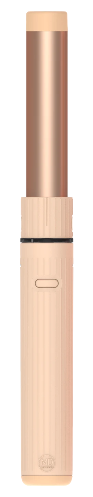
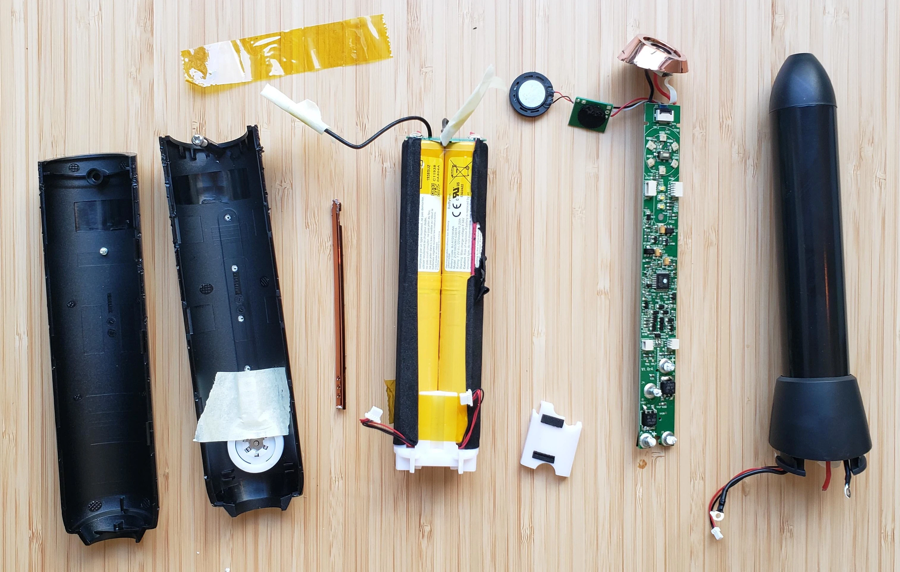
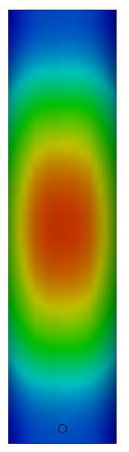
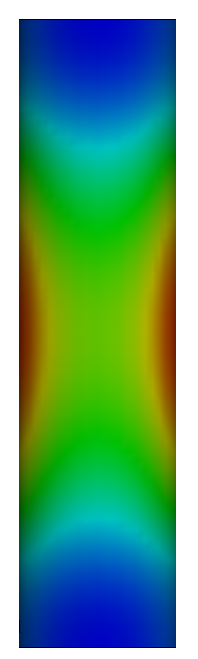
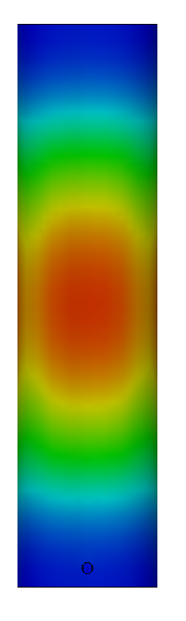
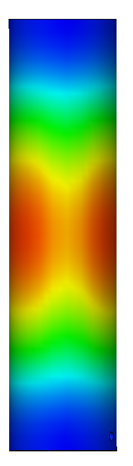
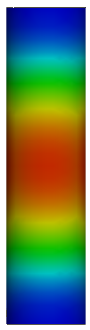
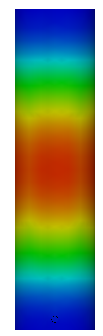
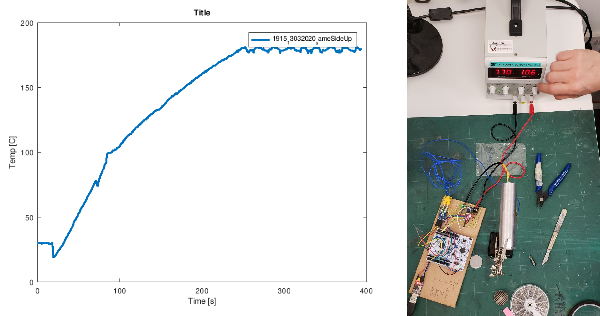

End-to-end development of a professional hair tool — spanning FEA-driven heater selection, closed-loop thermal validation, and custom lifecycle test instrumentation through to small-batch production.

A professional curling iron developed from first principles — materials selected for performance, geometry validated through physical prototypes, and every design decision tested before committing to production. The project spanned thermal simulation, custom test instrumentation, and small-batch assembly.
I designed barrel geometries across multiple materials and geometries, evaluated three heater configurations using SolidWorks thermal simulation, with Wire EDM selected as the prototyping route that made early validation possible. I also designed the electrical contacts and built a custom Scotch-yoke test rig for connector endurance testing.
MD London came with a clear goal — a curling iron that performed well and felt built to last. Translating that into a manufacturable product meant making decisions around materials, geometry, and heating elements that only reveal their true character once built and held.
Delivering that required: mapping heater technologies from adjacent industries to identify viable candidates with commercial pricing; validating barrel prototypes with external sensors and a Raspberry Pi, independently of the client's control board; designing a connector durability test rig from scratch to generate objective pass/fail evidence before committing to small-batch assembly; and defining an assembly process built for repeatable production, not just one-off prototypes.
Several brands were disassembled to map their internal architecture, heater configurations, and material choices. Three heater technologies were evaluated — PTC, silicone, and MCH — each assessed against thermal efficiency, ramp-up speed, manufacturing compatibility, and long-term durability.

Some manufacturers placed the PCB inside the heated zone to maximise battery space; others used multi-part barrel assemblies designed for complete disassembly. Spring-loaded heater contact proved universal across every brand examined — simple, ubiquitous, and the baseline assumption for any competing design. This analysis directly informed the material and geometry decisions that followed, providing a baseline against which every prototype iteration could be measured.
SolidWorks thermal simulations were conducted to compare heat distribution patterns across MCH configurations under steady-state conditions — informing the selection on thermal performance, cost, and weight.
Dual heating element — two distinct thermal zones


Temperature range
Heat distribution pattern: Two distinct hot spots with visible temperature bands along the barrel length — within acceptable specification for the end-use application.
Triple element — thermal lobes beginning to merge


Temperature range
Heat distribution pattern: Hot spots begin merging into broader zones — reduced banding, but added component count and assembly steps.
Quad element array — near-uniform conical heat distribution


Temperature range
Heat distribution pattern: Complete lobe merger creates smooth conical heat profile — most uniform surface distribution. Diminishing returns versus added cost and weight.
The 2x MCH configuration showed the least uniform heat distribution in simulation — but was selected on the basis of weight, cost, and real-world thermal behaviour. At approximately 15g lighter than the 4x configuration and 60% lower component cost, it was the stronger choice for a handheld product heading to small-batch production. In use, hair acts as an insulator along the barrel, compensating for the simulated non-uniformity — and user testing confirmed no perceivable difference in styling quality across configurations. Simulations were run in SolidWorks under steady-state conditions, with a 30W MCH element at 23°C ambient, measuring surface temperature at barrel outer diameter.
Internal configuration comparison
Cross-sectional geometry determines how the MCH element seats against the barrel bore and where contact pressure concentrates — directly governing the thermal distribution pattern. The face count defines the geometry: 2F uses two flat faces at 180°, 3F uses three at 120°. Both were prototyped in copper and aluminium to baseline conductivity differences before committing to Al 6061 as the production material. 4F was evaluated through thermal simulation only.
2F — Copper
Two-face geometry, 180°
Initial exploration
2F — Aluminium
Same geometry, reduced mass
Material comparison
3F — Copper
Three-face geometry, 120°
Increased contact distribution
3F — Aluminium
Three-face geometry, 120°
Increased contact distribution aluminium
MCH heaters were selected over PTC and silicone alternatives. PTC elements self-regulate temperature but lack the thermal density and ramp-up speed required for the product’s target performance. Silicone heaters offered flexibility but introduced compliance issues when pressed against a rigid barrel. MCH elements provided the highest thermal efficiency, direct surface contact, and compatibility with the barrel’s geometry under compression. MCH was the only configuration that met all three criteria without compromise.
Cu C11000 and Al 6061-T6 were prototyped and compared directly. Copper’s thermal conductivity is more than twice that of aluminium, but its density added weight that exceeded the product’s ergonomic target for a portable appliance. Al 6061 offered a workable balance of conductivity, machinability, and mass — thermal simulations confirmed it could sustain operating temperatures without deformation across the design’s thermal cycle. Al 6061 was decisive.
The barrel geometry required internal features that would normally be produced by extrusion — a process where tooling costs make early-stage iteration expensive. Electrical Discharge Machining (EDM) was identified as a compatible alternative: it replicates the cross-sectional profiles achievable in extrusion without dedicated dies, producing prototype parts dimensionally equivalent to the intended production geometry, allowing functional testing to proceed before any tooling commitment.
End caps required a polymer capable of sustained exposure to temperatures exceeding 200°C in contact with the barrel. PEEK was selected for its thermal stability and mechanical strength at elevated temperatures. For the contact holder, PEI (ULTEM) was used in its place — it shares PEEK’s high-temperature resistance and is directly 3D-printable, making it a cost-efficient alternative for components where load-bearing requirements did not justify the premium of machined PEEK.
Validation required connecting the pre-programmed ST board to barrel-mounted thermocouples and confirming the closed-loop control delivered the specified heating curve in hardware — bridging the electrical and thermal domains.

Closed-loop thermal response — barrel temperature vs. time at target setpoint. Confirms control stability and ramp rate within spec.
The barrel reached 180°C with no overshoot, stabilising within approximately 250 seconds.
Connector degradation only becomes apparent through extended use. A bespoke rig was built to stress the contact interface through a full automated cycle run.

System Architecture Diagram
Scotch-yoke test rig — full assembly
The Scotch-yoke mechanism converts motor rotation into a fixed linear stroke — stroke length determined by geometry rather than software control. A limit switch counted each cycle completion; GPIO debouncing filtered the brief electrical noise that occurs when metal contacts first meet, ensuring each cycle was counted once.
 ▶
▶
Rig in motion — simulated lifecycle sequence
The video shows the mechanism running under load. The brief hesitation at startup reflects metal-on-PLA friction at rest — a known characteristic that self-resolved once in motion. Resistance measurements were taken manually using a calibrated multimeter as the reference instrument — the mechanism would complete a cycle, pause, measure, then repeat. The Raspberry Pi's electrical environment — power rail fluctuations, digital noise, and grounding — requires careful isolation to produce stable low-level readings.
Resistance variation stayed within ±0.2% across all 1,024 cycles — no connector degradation detected.
Ten units were built. The process surfaced several notes for future production — minor adjustments to spring geometry and barrel fit that only become visible when building repeatedly in sequence. Simulation and single-unit prototyping wouldn't have caught them; the batch did.
My contribution covered the thermal sub-assembly: soldering and insulating heater extension wires, connecting them to the blade connectors, seating the heaters in the barrels with the flat contact springs, and fitting the end caps. Each completed unit was resistance-checked before sign-off.
First production batch — Al 6061 barrels with PEEK end caps, ready for final assembly
Looking to work on systems that move, sense, and respond.